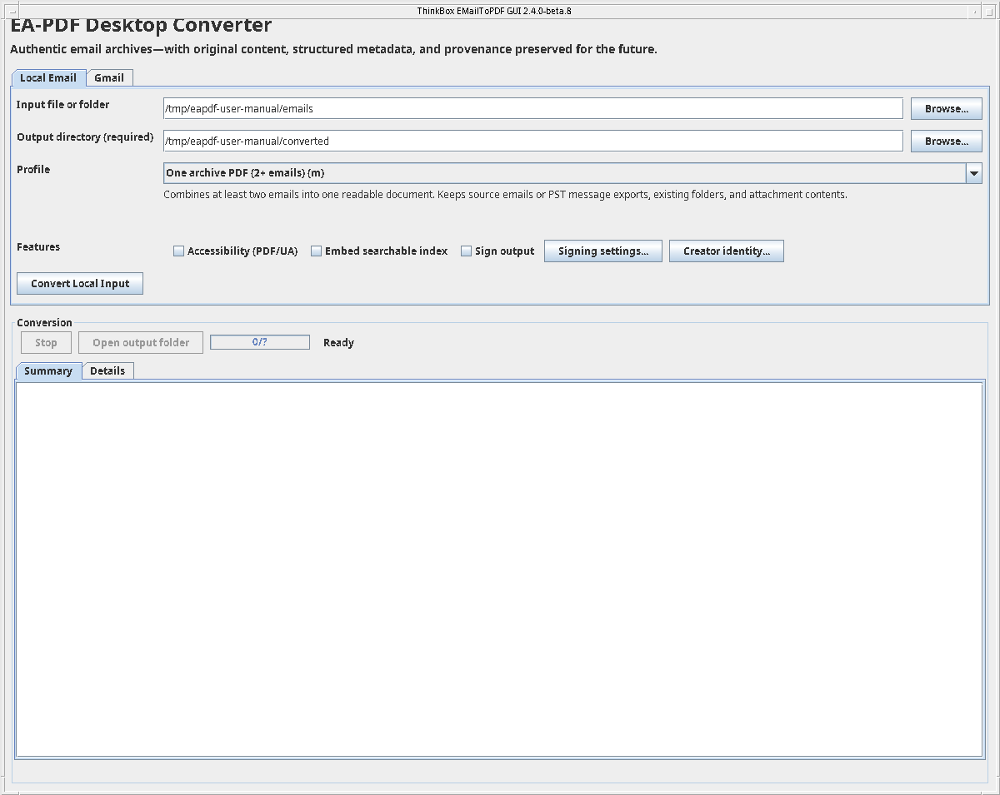
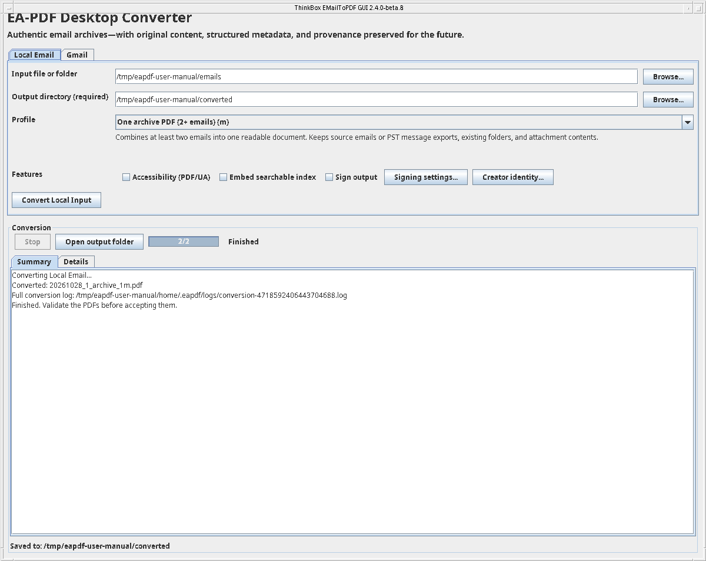
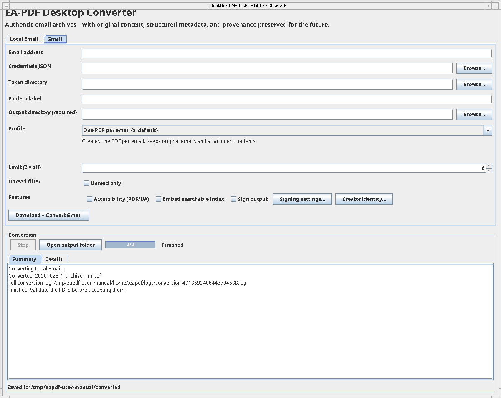
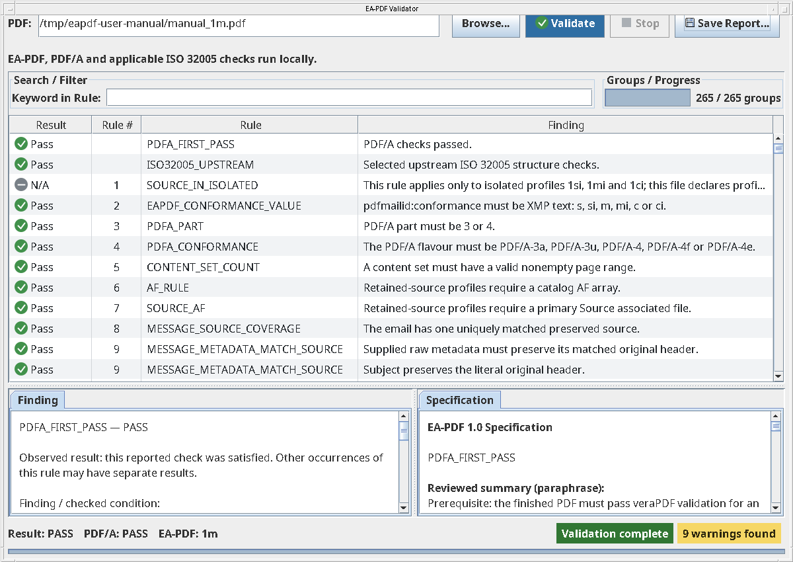
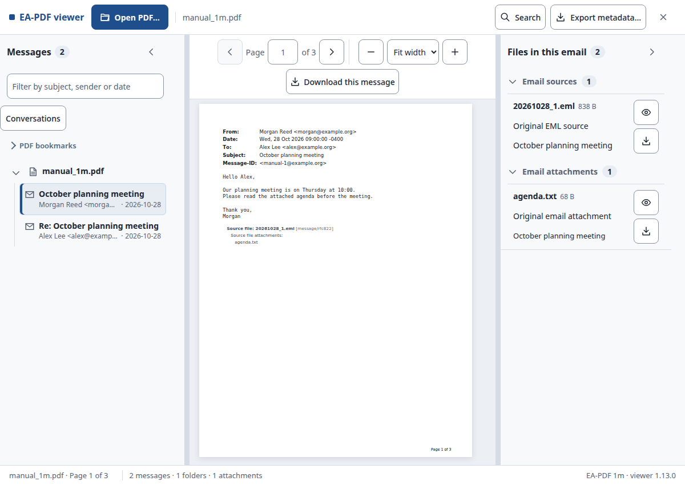
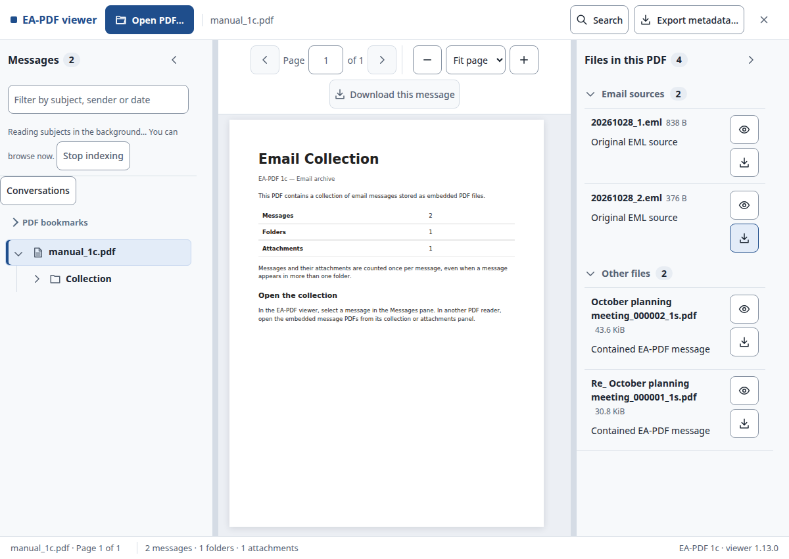
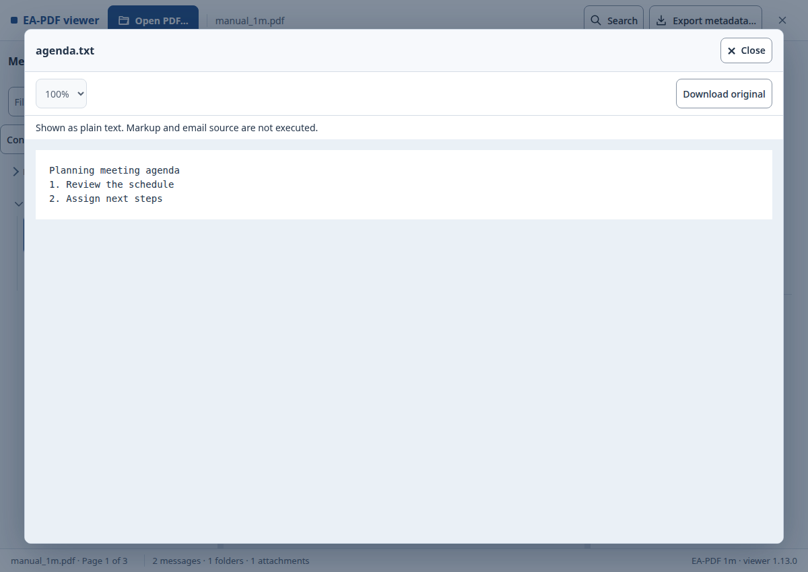

User Manual · Creator and validators 2.4.0-beta.7 · documentation revision 24 November 2026
EA-PDF converts email into PDF files for preservation and access. It supports saved EML and MSG messages, PST and MBOX mailboxes, and Gmail downloads.
The creator produces readable email pages with structured metadata and retained source messages and attachments where the selected profile allows them. The validators check PDF/A and EA-PDF requirements. The viewer lets people browse messages, collections and embedded files.
Created by Thinkbox.DIGITAL.
Screenshots illustrate real earlier beta sessions using fictional mail; some layouts and labels have since changed. Follow the current controls described in the text. The screenshot set is not a fresh acceptance record for this documentation revision.
1. Understand your files and choose an output
The Creator refreshes the message count once a second and shows longer phases in its status line.
When generating a PDF filename from the input filename or email subject, the creator removes replacement characters (�) and keeps readable characters.
Read the conversion warnings
Open the PDF and look for the shaded INCOMPLETE SOURCE notice above the message headers. For a collection, the cover points to warnings in the embedded messages.
A finished conversion can still have limitations. Review the warnings before accepting the PDF. The output folder contains progress.json: open it in a text editor to see the job status, the PDF checksums and the warnings. When the creator records a warning, error, or blocked remote asset for a PDF, it writes a summary in the output folder's logs/ directory. Keep the status file with the conversion log and validation reports. A later conversion to the same folder replaces this status file.
Each entry in conversion_diagnostics identifies the source and message, explains what happened and its effect, and suggests what to do. For example, TEXT_RECOVERED means some displayed characters may differ from the original. SOURCE_INCOMPLETE means source content could not be recovered. A DATE_PRECISION_REDUCED warning means native PST fractional seconds became whole seconds in the reconstructed message and PDF date. Keep the original PST if that timing matters.
If an EML attachment or inline image fails MIME transfer decoding, the creator reports SOURCE_INCOMPLETE and continues with the available content. The PDF omits the affected decoded part. The creator warns about malformed MIME parameters and omits them from generated metadata. It retains readable content and assigns a generated name when an attachment has no readable filename. If a declared multipart boundary is missing from the body, the creator warns and uses a complete boundary found in the body. An unreadable section is omitted if no complete boundary can be recovered. Profiles 1s, 1m and 1c embed the original EML byte for byte.
The creation receipt identifies the finished PDF but does not replace validation. Its PDF/A and EA-PDF validation fields say NOT_RUN because those checks belong to the separate validator. Run the Java validator on the published PDF and keep its report. A passing report does not erase conversion warnings.
What the project produces
The creator turns email into searchable PDF pages and adds information that identifies messages, their sources and their attachments. EA-PDF means Email Archiving PDF: it describes how email information is organized inside the PDF. PDF/A is a preservation format for PDFs. This creator currently writes PDF 2.0 with PDF/A-4f identification for all six EA-PDF profiles.
A validator checks the file's structure and available evidence. The viewer helps you read it. A PDF opening successfully does not mean it passed validation. A validation PASS does not mean every embedded file is safe to run, or that the PDF is independently certified.
Which input do you have?
File or source
What it usually contains
How to use it
EML (.eml)
One email saved from a mail program.
Select the file, or a folder of EML files.
MSG (.msg)
Usually one Outlook message.
Select a saved Outlook message or a folder of messages.
PST (.pst)
An Outlook mailbox with folders and messages.
Choose separate message PDFs, an archive, or a collection in the desktop creator.
MBOX (.mbox)
Several messages stored together, often from a mailbox export.
Select the mailbox file.
Gmail
Messages in a Google account.
Use the creator's Gmail tab or Gmail command-line entry point; account authorization is required.
If you have only a message open in a mail program, first use that program's save or export command. Menu names vary. This project does not open an Outlook account directly; a saved PST or MSG is an input. A file extension alone cannot make an unrelated file an email.
Choose one of six profiles
A profile is an output arrangement. Choose based on how the recipient will read the email and whether the original source assets should travel with it.
Profile
Choose it when you want...
Source and attachment policy
1s
One PDF for each email.
Retains the available source email and native attachments.
1si
One PDF for each email with originals omitted.
Omits source email and native attachment payloads.
1m
At least two emails in one continuous document, convenient to read or print.
Retains sources and native attachments.
1mi
The same continuous document with originals omitted.
Omits sources and native attachment payloads.
1c
One collection file containing separately openable email PDFs, with folder/label grouping.
Retains sources and attachments in the message PDFs. This creator makes 1s children.
1ci
A collection containing separately openable copies with originals omitted.
This creator makes 1si message children.
Start with 1s for one email. Choose 1m for a combined reading copy. Choose 1c when folder browsing and separately extractable messages matter. The local archive command requires two or more messages for 1m/1mi. A collection can contain one message.
For local combined archives and collections, the Creator can render several messages at once, including messages read from a single mailbox. It uses the size of extracted bodies and attachments and available memory to choose how many workers to use.
The letter i means isolated. It does not mean anonymized or redacted. Visible addresses, body text, metadata and inline images can remain. Attachment markers may remain while their payloads contain zero bytes.
Keep your originals
For EML and MSG, a retained-source PDF includes the original message asset. For PST, MBOX and Gmail, it includes individual exported or reconstructed messages. It does not include the original PST/MBOX container or a complete copy of the Gmail account. Keep the original mailbox export separately when its full format and properties matter. Conversion does not recover information that was already missing or damaged.
A collection's outer pages are its introduction and index. To read the actual emails, open its embedded message PDFs. A basic PDF reader may show only those outer pages. The project viewer supports browsing these children.
2. Get the tools ready
Open the release downloads. Install a desktop version of Java 21 or later, then download the apps you need.
Desktop Viewer: open a PDF and browse its email and attachments.
Validator: check a PDF and save a report.
Creator: turn email into PDFs in a desktop window.
The Creator can run with built-in settings. See the configuration guide to customize them.
Double-click a desktop app’s JAR file to open it. A JAR is the app itself. If a ZIP or archive program opens, use Open with in your file manager and select Java.
Double-click Creator, choose a small email file, and select an output folder. Click Convert Local Input. When the conversion finishes, check the PDF in Validator and read it in Desktop Viewer.
Keep your original email in a separate folder. Save converted PDFs and validation reports where you can find them again.
3. Creator: make PDFs from local email
Convert one email
Open the creator GUI and select the Local Email tab.
Beside Input file or folder, click Browse... and select an EML or MSG.
Beside Output directory, select your PDF output folder. Enter or choose a separate writable folder. This field is required; the GUI does not choose a default output directory.
Choose One PDF per email (s, default).
The creator identity defaults to Thinkbox.DIGITAL. Use Creator identity... only when an override is needed for this session.
For a first attempt, keep the normal feature settings and leave signing off.
Click Convert Local Input.
Wait for Finished. Your files are ready. Then click Open output folder.
Read the summary before using the result. If a file was rejected, a message could not be converted, or a limit was reached, keep that explanation with the output. Creation is followed by validation and visual inspection; it is not a substitute for either.

Creator setup. This example selects a folder containing two fictional emails and the 1m archive profile. For a single email, choose the first profile option.
Convert a folder or mailbox
Select a directory, PST or MBOX instead of one message. A directory import includes supported message files beneath it. Relative EML/MSG folders become collection groups when you choose 1c/1ci. Unsupported or unrecognized inputs are reported rather than silently treated as email.
With the default profile, each message becomes its own PDF. Select the combined archive profile for a continuous reading document, or a folder collection profile for separate embedded messages. Profiles ending in i apply the omissions described in chapter 1.
The creator prints the actual output paths. Automatically chosen names avoid replacing existing exports by adding a suffix. An explicitly supplied archive destination in the command line is a requested replacement destination. Use a new output folder for each important run so the files and logs are easy to identify.

Completed conversion. The summary gives the PDF filename; the saved-to line identifies the output folder. This is a real conversion, not a simulated progress screen.
Features and extra files
Accessibility, searchable indexing, and signing start unchecked in the Creator. Select the features you want for the conversion.
Control
What it does
Embed searchable index
Starts unchecked in the Creator window. Select it to build offline metadata and full-text indexes for supported archives. Uses built-in Java PDFBox extraction.
Accessibility (PDF/UA)
Adds available semantic/accessibility structures. This is not proven PDF/UA conformance.
Sign output
Requests a certificate-based signature. Configure the certificate first; see chapter 8.
Command-line --debug
Writes additional diagnostic information when requested. It can contain private email data.
Branding, Finding Aid and PREMIS generation have been removed. Collections retain their required cover page. These removals do not affect the viewer’s independent CSV metadata export.
Progress, stopping and errors
Summary lists PDFs as the creator saves them in the output folder. Details contains the fuller log. Each PDF becomes available after its creation checks and any requested signing finish.
Click Stop to cancel an active conversion. The output folder keeps PDFs already saved, including after a later conversion error. Check the summary for the final job status before restarting. Temporary work can use more space than the finished PDF.
For missing text or unexpected appearance, compare with the original email. Remote resources are not automatically fetched. Unsafe link schemes are removed from rendered pages in the hardened checkpoint. Source bytes can still contain the original link text.
4. Creator: download from Gmail
Gmail conversion uses Google's authorization process. Your normal Gmail password is not entered into the creator. This route needs internet access to Gmail. The local-file route does not require an account.
One-time account setup
In Google Cloud Console, create or choose a project and enable the Gmail API.
Configure its consent screen in Google Auth platform. Choose the audience suitable for your account; if the app is in testing, add the account as a test user when required.
Create an OAuth client with application type Desktop app and download its JSON credentials.
Store that file privately as credentials.json. Do not publish it or send it with your PDFs.
Google's screens can change. The current setup reference is the official Gmail Java quickstart. You are using this project's application, so you do not need to build Google's sample.
Use the Gmail tab
Open Gmail in the creator.
Choose the downloaded credentials JSON file.
Leave the user as its normal default for the signed-in account, or use me. Choose a private token directory if you want to override the default.
Enter the folder/label, such as INBOX. Use a small message limit for your first attempt.
Choose an output folder, profile and creator identity.
Click Download + Convert Gmail. On the first run, complete account selection and permission approval in the browser.
Wait for conversion and check the output as you would a local email PDF.

The actual Gmail form before account authorization. No real account or token was used for this screenshot.
Labels, unread mail and limits
Unread only selects unread messages. A positive limit caps how many messages are downloaded; begin with a handful. A label can be its actual ID or exact name. Unknown or ambiguous names stop with an error. ALL, ALL_MAIL and * select all mail. An exact label name containing commas takes precedence over splitting a list. Message labels are retained for collection grouping.
The download is read-only; it does not delete mail or mark it read. Gmail source assets are the individual downloaded messages, not an embedded backup of your entire account.
Tokens and repeat authorization
A token is saved authorization that lets the application reconnect. The normal token directory is ~/.gmail_token_store, separate from the credentials JSON. Protect both. Use a separate token directory for a different account. To force a fresh sign-in, stop the application and remove only the token directory you intend to reset; the next run will ask again.
Gmail label names and IDs are case sensitive. Individual PDFs can convert while messages download in sequence. For an archive or collection, rendering starts after the selected messages are prepared. The creator window keeps the completed and total counts visible during and after a run.
Resume an interrupted Gmail export
Advanced users can set EAPDF_GMAIL_RESUME_DIR to a private directory before launching the same export again. The first attempt saves a snapshot of selected message IDs and staged messages. Completed unchanged outputs can be skipped, and archive jobs can reuse downloaded messages.
This resume directory contains private message bytes and remains after success. Delete that export's printed checkpoint directory when you no longer need it or when you want a new selection that includes newer mail. Leaving the variable unset uses temporary staging instead. See docs/GMAIL.md for the detailed resume rules.
5. Standalone Java validator
Check a PDF locally
This is the easiest validator to install. It needs Java 21 or later and the single validator JAR. Its PDF/A engine, EA-PDF rules and selected ISO structure profile are bundled. It does not require Docker or Python and does not connect to an email account.
Double-click the Validator JAR.
Click Choose PDF... and select the finished PDF, or enter its path in the PDF field.
Validation starts when a file is selected. Use Validate to run it again. Watch the stage/progress indicator.
Read the overall result at the bottom when the run finishes.
Select a finding row to read its details. The Specification pane shows any cited pages in their original layout.
Use Keyword in Rule to narrow the rule list. Clearing it restores the list.
Click Save report... to save the JSON report with your records.

A completed standalone validation. The bottom line reports the overall result, PDF/A result and declared EA-PDF profile. N/A rows can be normal when a rule applies to a different profile.
Understand the result
Validate the main email PDF and its email PDF children. The validators always run EA-PDF checks, including PDF/A and applicable ISO 32005 checks. There is no separate validation-target selector.
Result
What to do
PASS
The required implemented checks completed successfully. Keep the report. Still inspect important pages and attachments against your source.
FAIL
A completed check found a violation. Read the failing rule and its details. Recreate from the source if appropriate; the validator does not repair the PDF.
INCOMPLETE
A required check could not finish or evidence was unavailable. Read the reason. It may be a limit, unsupported content, missing source, cancellation or another operating error. Resolve it and rerun if possible.
WARN in a finding
Read the explanation. Some warnings prevent a complete result; others are informational. Use the overall result, not the warning count alone.
N/A in a finding
That rule does not apply in this context. It is not a failed check.
A document with both a proved violation and an unavailable comparison can still have an overall FAIL. A positive count of passed checks does not override INCOMPLETE. The validator never turns a resource limit into a successful full check.
The checker covers PDF/A, selected ISO/TS 32005 structure checks, EA-PDF identification, message/source metadata, attachments, document parts, ownership relationships and collection children within its supported scope. Unsupported or ambiguous source comparisons remain visible. These are automated checks, not independent certification or a guarantee of attachment safety.
Collection findings show child summaries and relevant failed or incomplete checks. The saved report retains all child checks.
Stopping and saved reports
Click Stop during validation to cancel. A stopped check is incomplete. A saved JSON report is a structured text file that another program can read. Save it alongside the PDF, using a different filename. Reports can include message details; protect them like the email itself.
Validation reads the PDF and does not rewrite it. It does not establish certificate issuer trust, check certificate revocation, or replace signature verification in a suitable PDF/signature tool.
6. Optional Python validator
For everyday checks, open the desktop Validator. The Python validator is an optional diagnostic tool described in the technical documentation.
Select a message or folder to see its pages. Use the Files pane to preview or save an attachment. In a collection, open a member and use Parent to return.
Use Search to find text. Open Portfolio view when you want to browse the files in a PDF Portfolio.
Desktop Viewer requires a desktop version of Java 21 or later. On Linux, the app uses a graphical session with GTK 3. See the Desktop Viewer guide for more controls.
Use the Chromium viewer ZIP, extract it, and keep the extracted folder in a stable location. The current package requires Chromium 156 or newer.
Enter chrome://extensions in the browser's address bar.
Enable Developer mode.
Click Load unpacked and select the extracted extension folder containing manifest.json.
Open the extensions menu and click EA-PDF viewer beta. Pin it if you want easy access.
This local installation does not update automatically. After replacing or rebuilding the extension files, click Reload on its extensions card and close and reopen the viewer tab. Google's unpacked-extension instructions provide the browser-side steps.
Install in Firefox
Use the separate Firefox ZIP. The current package requires Firefox 158 or newer.
Extract the ZIP.
Enter about:debugging in Firefox and select This Firefox.
Click Load Temporary Add-on and select the extracted manifest.json.
Use the extension's toolbar/menu action to open the viewer.
This is a temporary installation and disappears when Firefox restarts. Permanent normal installation needs signed packaging. See Mozilla's temporary-installation guide. No store approval is implied.
Open and navigate a PDF
Download this message keeps the original PDF only when a complete inspection establishes that it is a standalone message and all pages belong to it. Otherwise it exports only pages proven to contain the message body; the button is unavailable when that mapping cannot be established. Exported pages keep text and appearance but omit archive files, metadata, annotations and accessibility tags. They are a reading copy; validate them separately if EA-PDF conformance is required. Portfolio's explicit Download active file action downloads the entire active PDF.
Click Open PDF, drag a PDF into the viewer.
Use Messages on the left to select a message. Its known body page opens.
Scroll through the PDF, use the page arrows, or type a page number and press Enter.
Use minus/plus or the percentage selector to change zoom, or choose Fit width or Fit page.
Select text on the page to copy it. Open Search (Ctrl/Cmd+F), enter a phrase and press Enter. Shift+Enter goes to the previous match; Esc closes the panel. Clearing the input clears results.

The left panel chooses the message, the middle shows its pages, and the right lists its files. The screenshot shows an earlier interface edition. Selecting the document name shows the document's full file list.
Use the filter at the top of Messages to find a subject, sender, recipient or date across collection members, including emails you have not opened. Select a result to open that email. The list stays visible, and scrolling beyond the email follows the filtered results in either direction. Clear the filter to resume ordinary archive scrolling. Use All files in the text search controls to search text inside collection PDFs. The viewer reports incomplete searches when a file cannot be read or a safety limit is reached. Search does not perform OCR on scanned images. When the file does not supply a unique message-to-page link, the viewer explains that and leaves the document available for manual page navigation.
Collections and nested PDFs
Full offers Portfolio view only for PDF Portfolios. EA-PDF collections use the email navigation, including formats 1c and 1ci. When reading a member of an open Portfolio, the Portfolio view button remains available to return to its file list.
Folders start expanded. Click a chevron to collapse or expand a folder. Select a message PDF or use its View icon to open its own pages and files. The Return to parent PDF icon returns to its containing PDF. Breadcrumbs near the top let you return to an earlier document.

A collection has its own outer index pages and embedded email PDFs. Open a child to read the message; the outer PDF is not a continuous rendering of every message.
At the end or beginning of a child message PDF, scrolling can move to the next or previous message in the same immediate folder, following sidebar order. It stops at folder ends and where membership is ambiguous. Choose a different folder explicitly. Nested collections are not guessed into the same sequence.
View and download attachments
Choose the owning message to see its known files. Click View for supported images or text, or open an embedded PDF. The attachment preview has a fixed title bar. Click × Close at its top right or press Esc to return to the email. The Close button stays visible while scrolling, including on narrow windows.

Text attachment viewing. Download original preserves the stored bytes even when the on-screen text view has a display limit.
Type
Viewer behavior
PDF
Opens with page and zoom controls, or in the main embedded-PDF navigation.
PNG, JPEG, GIF
Raster image preview, subject to image-size limits.
Text
Displays text. A view beyond 2 MiB is truncated with a notice; download retains the full stored file.
HTML, SVG, EML
Shows inert source text rather than executing active content.
Office and other binary files
Download for an appropriate external program; no built-in Office rendering.
Omitted isolated attachment
Isolated profiles show one source-omission notice above the attachment groups. Empty files have no View or Download controls; original bytes cannot be recovered from a placeholder.
Download requests the exact embedded bytes with a safe filename. Several rapid requests are spaced slightly apart to avoid browser blocking. Check your browser’s downloads list for completion. It does not automatically open the saved file. Use your normal precautions before opening attachments in external applications. The viewer is read-only: it does not change the PDF or repair its contents. After an error, Reopen PDF can start a fresh reading session from the original file; select the message again afterward.
Export metadata to a spreadsheet
Email source descriptions are concise: “Original EML source”, “Original Outlook MSG source”, “Email source extracted from MBOX”, “Email source exported from PST” and “Original Gmail email source”. Detailed MBOX/PST preprocessing provenance remains in PDF metadata. The viewer shortens known legacy generator descriptions without modifying the PDF; older Gmail sources sharing the generic RFC 822 description appear as EML sources because their origin cannot be inferred reliably.
Emails attached within PST messages are described as “Attached email exported from PST”. When their contents are omitted, the description retains the policy notice and original size/checksum information.
Long viewer lists have wider scrollbars, with a minimum thumb length where supported by the browser. Truncated Portfolio filenames show their full name on hover or focus.
When a file description is shortened or does not fit, use Show more to read its complete stored text. Show less returns to the compact preview.
On narrow screens, new files default to Fit width unless the PDF specifies its own opening view. A zoom you choose is retained when resizing or moving between messages.
PDF Bookmarks starts collapsed. Select its heading to show bookmarks.
When moving between messages in the same PDF, an expanded bookmark list remains open. Open PDF remains available during navigation; a newly selected file opens when the current navigation finishes.
Parent returns to the parent document overview and the top of its left-pane navigation. In Portfolio view, this resets the file list to its top-level folder.
In Portfolio view, Download active file saves the PDF currently displayed, with its original bytes and filename. Select or open a PDF member to download that member; while viewing the cover, this saves the containing Portfolio PDF.
The PDF filename / path CSV field identifies the PDF containing the email, including its path inside a collection; it does not identify the original email source file. Its exported column heading is PDF.
Export metadata… opens a selection dialog. In CSV mode, choose the current message or the complete open file/collection and select the fields to export. Available fields are PDF path, folder paths, From, To, Cc, Bcc, Subject, Sent, attachment count and attachment names. Message-ID and Mail GUID are not exported. CSV does not require an embedded finding aid. Open it in a spreadsheet using UTF-8 if asked. Attachment names describe the messages; they do not establish that original attachment bytes are embedded in an isolated PDF.
In Original XMP mode, discover and preview metadata packets, download one original packet or export selected packets as a ZIP with a manifest. Decoded XML bytes are preserved. Shared metadata packets remain whole, so current-message scope can include other messages in the same PDF. Unavailable packets and partial exports are identified explicitly.
Missing metadata stays blank; stored date formats are retained. Embedded tabs are replaced with spaces to avoid spreadsheet import problems. Values that could be interpreted as spreadsheet formulas receive a protective leading apostrophe. The export is metadata, not a full email-body export. It does not recursively inspect arbitrary PDF attachments outside collections. Cancellation or an unreadable child stops the export without a partial CSV.
Linked PDFs, privacy and closing
For a web PDF link, the extension's context menu can open a viewer tab. The new tab then asks you to click Open linked PDF. Optional access to that site may require browser approval. There is no automatic fetch just because a link banner appears. Fetches omit cookies, reject redirects and have byte/time limits.
Opening local files stays on your device. There is no account, telemetry or document upload in the extension. PDF scripts are not executed, and attachments do not open automatically. Click the Close viewer icon to stop work and release the current document session.
The footer shows the declared EA-PDF profile and viewer version. The profile is a declaration read from the PDF, not proof of compliance. Run a validator for that. For printing, editing, signatures or unsupported reader functions, use an appropriate separate PDF application.
Conversations and file dates
Select Conversations to see reply chains reconstructed from embedded email metadata. Select Messages to return to folders; the open file's conversation cache avoids rereading metadata. A single email stays a standalone message.
The right pane shows the selected conversation. Up/Down selects the previous or next message. Scrolling at the top or bottom of a message also moves within that conversation. Confirmed marks header-based links. Optional experimental subject inference groups independent chains under a conversation heading without inventing reply parents.
Files within each Files in this PDF group sort oldest first by their owning email's Sent date. Undated files follow dated files. The order updates when background metadata indexing finishes. Threading does not modify the PDF.
8. Settings, signatures and preservation
Make repeatable settings
Use the Creator window to choose output and accessibility settings. Select Creator identity to enter the name of the person or organization responsible for the PDF.
Setting
Meaning
searchIndex.enabled / searchIndex.fullTextEnabled
Enable embedded search indexes and full-text generation for supported archives. Both default to true for command-line conversions. Unsupported or invalid indexes fall back to page scanning.
accessibility
Language, reading direction, page labels and partial semantic tagging. Experimental unavailable options do not prove accessibility conformance.
The creator uses bundled DejaVu Sans as the primary font and embeds the bundled sRGB profile. Built-in fallback fonts cover additional scripts. Complete configuration details are in config/README.md.
Sign the outer PDF
A digital signature helps establish whether signed bytes changed. You need your own document-signing certificate and private key in a password-protected PKCS#12 file, normally ending in .p12 or .pfx.
Click Signing settings... and select the certificate file.
Leave the key alias blank if there is only one private key; otherwise enter the intended alias. The reason is optional.
Enable Sign output.
Start conversion and enter the certificate password when asked.
The creator signs the outer PDF after its other changes. Embedded files are covered as bytes within it; children and sidecars are not separately signed. It adds no visible signature stamp. If signing was requested and fails, the creator does not silently publish an unsigned result.
Current signing does not check issuer trust or revocation, contact a timestamp service, or add long-term validation evidence. It is not a claim of qualified or certified PAdES signing. Test self-signed examples are demonstrations. Use a suitable signature-verification tool to check integrity and trust separately from EA-PDF/PDF/A validation. See docs/DIGITAL_SIGNATURES.md.
Keep a useful archive record
Keep the original inputs separately, especially original PST and MBOX containers.
Keep the PDFs, requested sidecars, conversion log and validation reports.
Record the creator/validator version and settings used.
For significant work, record SHA-256 checksums. A checksum is a fingerprint used to detect changed bytes; it is not a validation result.
Back up the record and spot-check recovery from that backup.
The viewer's metadata CSV can help you inventory messages. It does not replace the source emails or the PDF. Do not assume isolated output is safe to share without reviewing its visible text and metadata.
9. Command-line reference and batch work
For scripted conversion, validation, and maintenance, see the technical guide. The desktop apps are covered in Get the tools ready.
10. Troubleshooting
What you see
What to check next
JAR will not open, or opens as an archive
Install a desktop version of Java 21 or later. Right-click the JAR, choose Open with, and select Java.
Creator identity
Defaults to Thinkbox.DIGITAL. Use Creator identity... in the GUI or set creator in configuration to override it.
No supported inputs
Check the selected folder and actual EML/MSG/PST/MBOX contents. Directory scans report rejected or skipped inputs.
1m/1mi request rejected for one message
Use 1s/1si, or select at least two messages. A collection is another arrangement when separate embedded messages are wanted.
Only index pages appear
You may have opened a collection in a basic reader. Use the project viewer and open an embedded email PDF.
Attachment is empty
Check whether the profile is isolated. An omitted payload cannot be reconstructed from the placeholder.
Some text or an image is missing
Compare the source. Remote content is not fetched automatically. Check decoding/font warnings and source damage; do not assume conversion repairs missing content.
Conversion seems paused after rendering
Check the current stage. Assembly, checks and publication can still be running. Use Stop if you decide to cancel, then read the final summary.
Memory, decoded-byte, XML or scratch limit
Use a smaller source/export, fewer parallel workers, and enough free disk/RAM. A security limit can reject a valid file. Read the reason instead of calling it compliant.
Java validation is INCOMPLETE
Read VALIDATION_INCOMPLETE and affected findings. Missing/unsupported evidence differs from a proved rule violation. Increasing RAM cannot supply evidence that is absent.
Web PDF/A error or no JSON from veraPDF
Confirm Docker works for the server account, the required image is present, and the worker has enough resources. The Java validator includes its PDF/A engine and is an alternative.
Web 400, 401, 429 or 503
400: request/input/host may be rejected. 401: credentials needed. 429: job capacity full. 503: TLS/auth configuration or availability problem. Ask the administrator if needed.
Web download/report link no longer works
It may have expired. Save reports and outputs promptly; run again only if necessary.
Gmail refuses authorization or uses the wrong account
Check Desktop OAuth credentials, test-user access, account selection and the chosen token directory. Reset only the intended token cache if a new sign-in is needed.
Viewer changes do not appear
Reload the extension and reopen the viewer tab. Firefox temporary installations must be loaded again after restart.
Viewer says a file or codec is unsupported
Save the original PDF/attachment and use a suitable external tool. Do not interpret a display limit as a validation result.
Signature has an unknown issuer
A self-signed/test certificate is not normally trusted. Verify integrity and issuer trust separately; EA-PDF validation does not establish them.
Practical resource limits
At the hardened checkpoint, browser roots are limited to 512 MiB, embedded streams to 32 MiB and total extracted bytes to 128 MiB per session. Child PDFs are limited to 128 and nesting to eight levels. Linked downloads stop at 64 MiB or 30 seconds. Image and normal PDF.js decode limits can stop processing sooner.
The corrected viewer allows up to 16 MiB for each metadata stream and retains XML depth and node limits. When metadata cannot be read, the status and Reading notes explain that message lists and CSV export are unavailable. Pages may still display. The corrected Python command-line validator keeps its 512 MiB parser allowance and gives the trusted Docker client a separate, bounded 4 GiB address-space allowance. Address space is not the same as RAM usage.
The Java/Python validators normally limit a decoded non-image stream to 64 MiB, metadata to 16 MiB, aggregate decoded bytes to 512 MiB and embedded-file inspections to 2,048. Temporary work is monitored. Python bounded decoding does not handle all valid PDF filters; unsupported filters or predictors produce an incomplete assessment. See docs/security/HARDENING.md for settings and precise scope.
Start with small exports and a low worker count. Very large mailbox work depends on your machine and is outside this checkpoint's acceptance runs. Do not repeatedly retry a file without reading why the previous attempt stopped.
Ask for help without sharing private email
Record the tool/version, operating system, exact error text, selected profile and the stage where it stopped. Include a checksum and a sanitized log/report if appropriate. Review logs before posting them: paths, addresses, subjects and attachment details can be private. Provide a minimal shareable example when one is needed.
11. Updates and help
Edition and verification notes
This manual was updated on 22 November 2026.
Edition and availability. This guide covers creator and validator 2.4.0-beta.7 and Full browser reader 1.12.0. The Full reader restores recognized family names for affected embedded CJK fonts. macOS Firefox rendering still needs platform verification. Read the release notes for the exact package you use.
The names, addresses, messages and attachments in the screenshots are fictional. The screenshots come from the actual applications on Linux; window borders and file pickers will look different on other systems. Linux and the listed browser versions are the tested environment.
Update carefully
Keep a copy of your configuration, originals and completed records. Read the new release notes, download the intended files, and test a small known email before a large job. Replacing a JAR does not update a conversion that is already running. Unpacked viewer installations need an explicit reload and a new viewer tab.
The release includes a checksum file to verify downloaded apps.
Project home: github.com/thinkbox-digital/eapdf. External setup references in this edition were checked on 31 October 2026. Later screens and releases may differ.
Small glossary
Archive: here, a continuous PDF containing several emails. Collection: a PDF containing separately openable email PDFs. Embedded file: a file stored inside a PDF. Profile: one of the six output arrangements. Sidecar: a separate companion file beside the PDF. Source asset: original message data, or a derived message exported from a mailbox/account. Token: saved account authorization. Validation: checking a PDF against implemented rules and available evidence.
This manual is an ordinary PDF/A document, not an EA-PDF email archive. No EA-PDF profile is asserted for the manual.